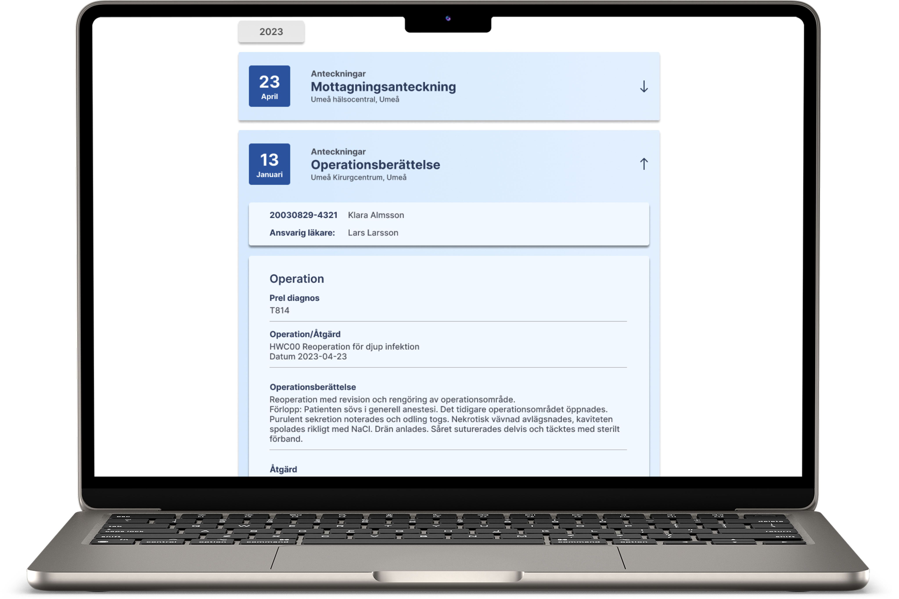

UX/UI Design
Cross & Cosmic
An integration of Region Västerbotten's old journal system NCS Cross inside Cosmic
Role
UX/UI Designer
Timeline
2 months
Team
4 members
Tools
Figma
Industry
Healthcare
Year
2025

Problem statement
The new journalsystem Cosmic was launched in April 2025 in Västerbotten. In order to access old patient information, healthcare workers still needs to open the old jounal system NCS Cross, which has its roots in the 1990's.
Time consuming
Working in two different systems takes valuable time
Complex Navigation
It takes a lot of experience to navigate NCS Cross
Outdated interface
The current interface lacks modern looks and features
Our solution
A component that makes Cosmic more effecient
The component saves valuable time while ensuring a seamless user-experience
Intuitive Interface
Simple and intuitive design that minimizes the amount of steps in every action
Effective Overview
Clickable dropdown-entries placed in chronological order makes an easy overview
Simple Filtering
Filter by date, type of note, profession and journal-writer to quickly find information
Familiar Design
The interface is using Cosmic's design-language to ensure trust and easy adaptation
Design Process
A structured approach to understanding users and creating meaningful solutions
01 Research
Conducted user interviews, surveys, and competitive analysis to understand user needs
- 4 user interviews with healthcare workers
- Thematical analysis from transcribed interviews
- Competetive analysis of similar systems
- Meetings with stakeholders and developers to understand the regulations and limitations
- Created functional-, usability- and UX-requirements from interviews and UX-laws
02 Ideation & Conceptualization
Brainstormed solutions and created user personas to guide design decisions
- Created 4 detailed user personas
- Ideation meetings with stakeholders and developers
- Feature prioritization using MosCoW method
03 Low-Fidelity Prototype
Developed an interactive low-fidelity prototype to ensure high usability.
- Created an interactive prototype in figma
- Grounded in interviews, requirements, UX-laws and cognitive theories
- Testing with stakeholders and developers to ensure alignment with company goals and regulatory requirements
04 High-Fidelity Prototype
Developed an interactive high-fidelity prototype in Figma
- Grounded in interviews, requirements, UX-laws and cognitive theories
- User-testing on 5 end-users
- Evaluated and refined results based on user-testing
Homepage
Opened entry
Result
Seamless integration of historic patient information
A component integrated in Cosmic that is based on real end-users input, ux-laws and cognitive theories to ensure a seamless and efficient user experience
User-centered
An iterative process with real end-users to ensure high usability and user-experience
Efficiency
The integration solves the problem of having to access two different systems
Filtering
An intuitive filter function is key to narrow down the amount of steps to find entries
UX Laws
The design is backed with UX Laws and Cognitive Theories